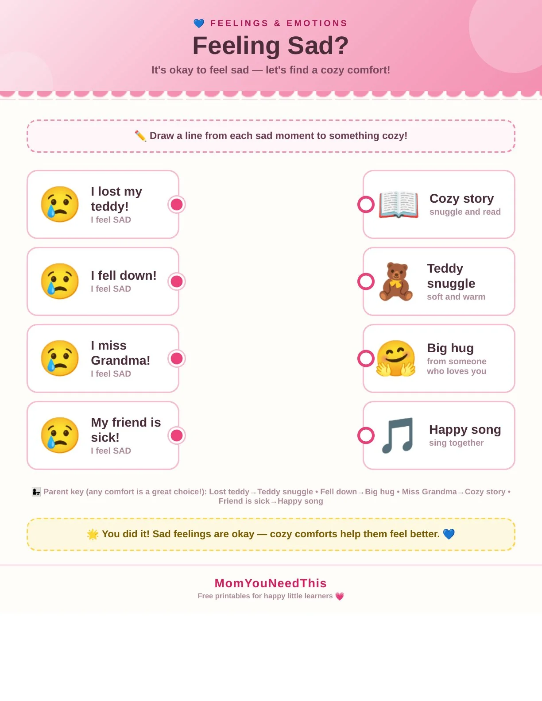

😢 Sadness Activities It Is Okay To Feel Sad
Everyone feels sad sometimes, even little ones. These tender activities help children recognize sadness, talk about their feelings, and discover comforting ways to feel better.
Quick Answer
This free printable sadness activity helps toddlers and preschoolers (ages 2–5) learn about the feeling of sadness: recognizing sad faces, naming what makes us sad, and practicing comforting strategies for tough days — a hug, a talk, a cry, a quiet corner, a favorite thing. The message underneath every page: sadness is a normal feeling that visits everyone, and it passes. Download and print at home with no signup needed.
At a Glance
- Ages: Toddlers and preschoolers (ages 2–5)
- Activity: Identifying sad faces; practicing comforting strategies
- Skills: Emotional vocabulary and comfort skills
- Format: Printable worksheet (PDF)
- Cost: Free, no signup
Sadness is the feeling adults most want to skip — and the one children most need vocabulary for. A child who can say “I feel sad because my tower fell” is already halfway comforted: the feeling has been named, and named feelings are smaller than unnamed ones. These pages are for a calm moment, not the middle of tears — the learning happens before it is needed.
😢 Explore Sadness Activities
Identify sad faces, talk about what makes us sad, and practice comforting strategies for tough days.
💡 How To Use This Activity
Print these pages for a calm, unhurried moment — not in the middle of tears. Work through them together, let your child point to the face that matches how sadness feels to them, and talk through the comfort ideas so they are familiar before they are needed. The print button opens the full-size page in a new tab if you prefer to print from there.

🖨️ Download Your Free Sadness Activities Printable
Identify sad faces, talk about what makes us sad, and practice comforting strategies for tough days. Print it out, grab the crayons, and you're ready — no signup needed.
⬇️ Download Free Printable 🖨️ Print🎁 Free printable for toddlers & preschoolers
💙 What Sadness Is Trying To Say
Sadness is information. It arrives when something a child cares about is lost, broken, finished or far away — a dropped ice cream, a friend who moved, a parent at work. It is not a malfunction and it is not misbehavior; it is the feeling that proves the thing mattered. Children who learn that sentence early — “I'm sad because it mattered” — grow into adults who can be sad without being frightened of it.
What sadness feels like in the body: heavy shoulders, a wobbly mouth, tears that come whether invited or not, a wish to be small and close to someone. Pointing at these on the feelings faces gives a child handles for a feeling that otherwise just floods.
What helps: being held or sat with (comfort first, fixing later — many sadnesses cannot be fixed, and do not need to be), naming it out loud, crying, which is the body's own release valve and never something to apologize for, a drink of water, a familiar blanket or stuffy, and time. Sadness moves through like weather when it is allowed to; it stalls when it is argued with.
The grown-up's job is mostly to stay: “You're sad. I'm here.” A child comforted through small sadnesses builds the exact circuit they will use for big ones. And if sadness visits every day for weeks, grows bigger instead of passing, or starts hiding a child from things they love, that is worth a conversation with their doctor — feelings are weather, but a season that will not turn deserves a second look.
❓ Sadness Activities FAQs
What activities are included in Sadness Activities?
This page collects our free sadness printables in one place: identifying sad faces, talking about what makes us sad, and practicing comforting strategies for tough days — hugs, talking, crying, quiet corners, favorite things. Download the printable below and start learning right away.
Are these activities really free?
Yes — every printable on MomYouNeedThis is 100% free to download and print. No signup, no payment, just tap the download button. These pages are written for calm moments, so they are there in the drawer before a tough day ever arrives. These pages are written for calm moments, so they are there in the drawer before a tough day ever arrives.
How do I use these activities with my child?
Print these pages for a calm, unhurried moment — not in the middle of tears. Work through them together, let your child point to the face that matches how sadness feels to them, and talk through the comfort strategies as a menu to choose from later. When a real sad moment comes, the menu is already known: “Do you want a hug, or your blanket, or to sit together?”